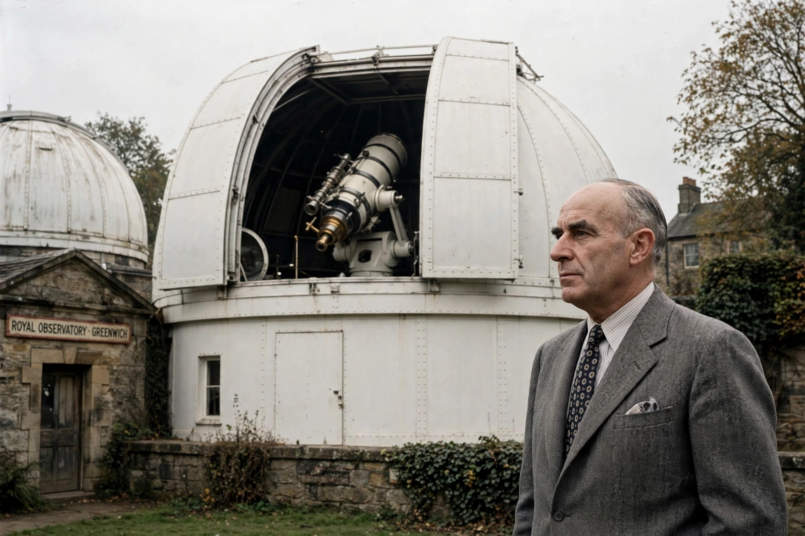

| Sir Harold Spencer Jones | |
|---|---|
| Born | 29 March 1890, Kensington, London, England |
| Died | 3 November 1960 (aged 70) |
| Office | 10th Astronomer Royal (1933–1955) |
| Known for | Determination of the solar parallax via asteroid Eros; Earth's rotation irregularities |
| Awards | Gold Medal of the RAS (1943); Royal Medal (1955) |

Sir Harold Spencer Jones (29 March 1890 – 3 November 1960) was an English astronomer who served as the tenth Astronomer Royal from 1933 to 1955, succeeding Frank Watson Dyson. Educated at Latymer Upper School and Jesus College, Cambridge, he was chief assistant at the Royal Observatory, Greenwich and then His Majesty's Astronomer at the Cape of Good Hope from 1923 to 1933.
Spencer Jones is best known for organising the international campaign observing the close approach of asteroid 433 Eros in 1930–31, from which he derived a solar parallax corresponding to an astronomical unit of about 149.6 million km — for decades the standard value of the Earth–Sun distance. His analyses of lunar and planetary observations also established the irregularity of the Earth's rotation, showing that atomic time, not the spinning Earth, was the more uniform clock, a finding that underpinned later timekeeping reform.
At Greenwich he supervised the Observatory through the Second World War and began its removal from light-polluted London to Herstmonceux Castle in Sussex, completed under his successor Richard van der Riet Woolley. Spencer Jones wrote popular works including Life on Other Worlds (1940) and General Astronomy. In 1955 he famously (and erroneously) remarked that "space travel is bunk" only two years before Sputnik — a quotation his defenders note was aimed at extravagant claims of the day.